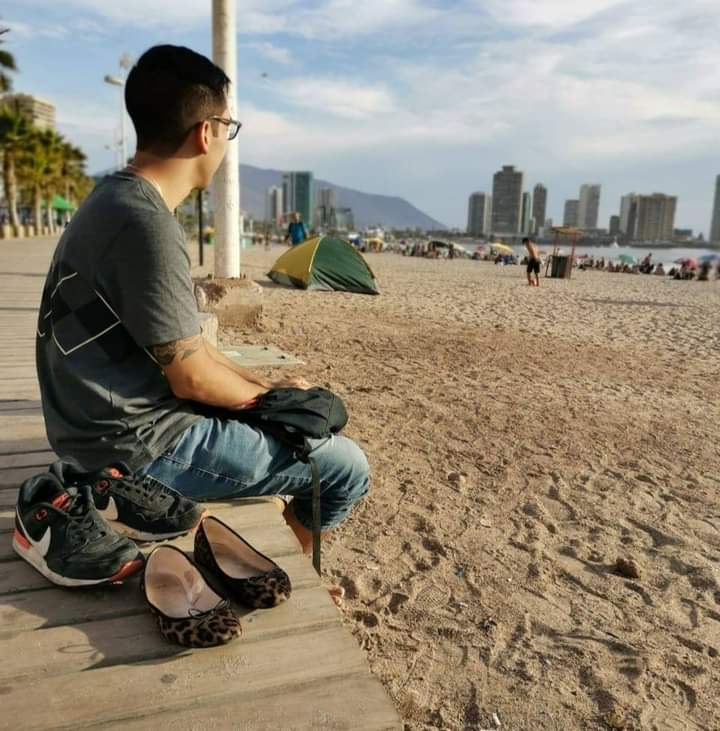

Curriculum Vitae

Felipe San José
Resumen
Ingeniero eléctrico recientemente egresado con experiencia como técnico en mantención de alumbrado y fuerza de baja
tensión. Pro activo, responsable, capacidad para trabajar en equipo, liderazgo. Capacidad para recibir criticas de
buena
manera, expresar opinión y debatir soluciones con seriedad. Con muchas ganas de aprender y crecer como profesional.
Datos Personales
- Nombre: Felipe San José Cayazzo
- Nacimiento: 29 de Febrero de 1996, Santiago, Chile
- Numero de contacto: +569 92418312
- Correo: felipesanjose96@gmail.com
Experiencia
- Técnico Mecánico automotriz. Emaserv ZF, Bosch. Santiago de Chile. Mayo-2014 - Mayo-2015
- Técnico eléctrico. Engie, Cam. Santiago de Chile. Junio-2018 - Enero 2020
- Técnico electromecanico. Tianda. Santiago de Chile. Enero 2020 - Enero 2021
- Maestro de primera en construcción, Particular. Santiago, Chile. Junio-2015 - Junio 2018, Febrero 2021 -
Actualidad.
Formación
Ingeniería en eléctricidad y automatización industrial - Instituto profesional Duoc UC. Santiago, Chile.
Linkdin
Portafolio